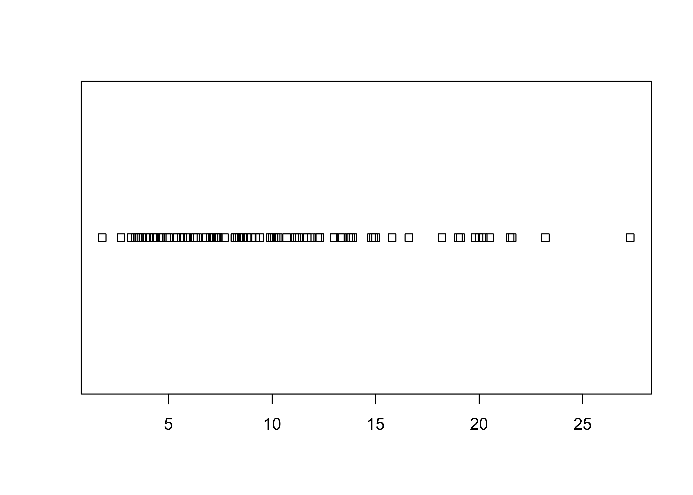
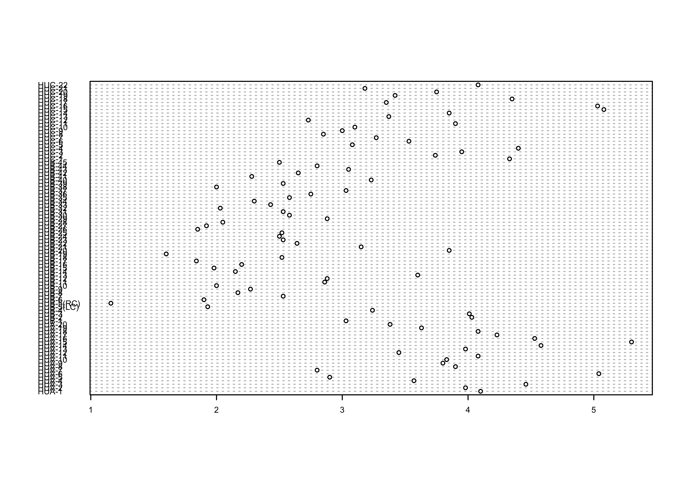
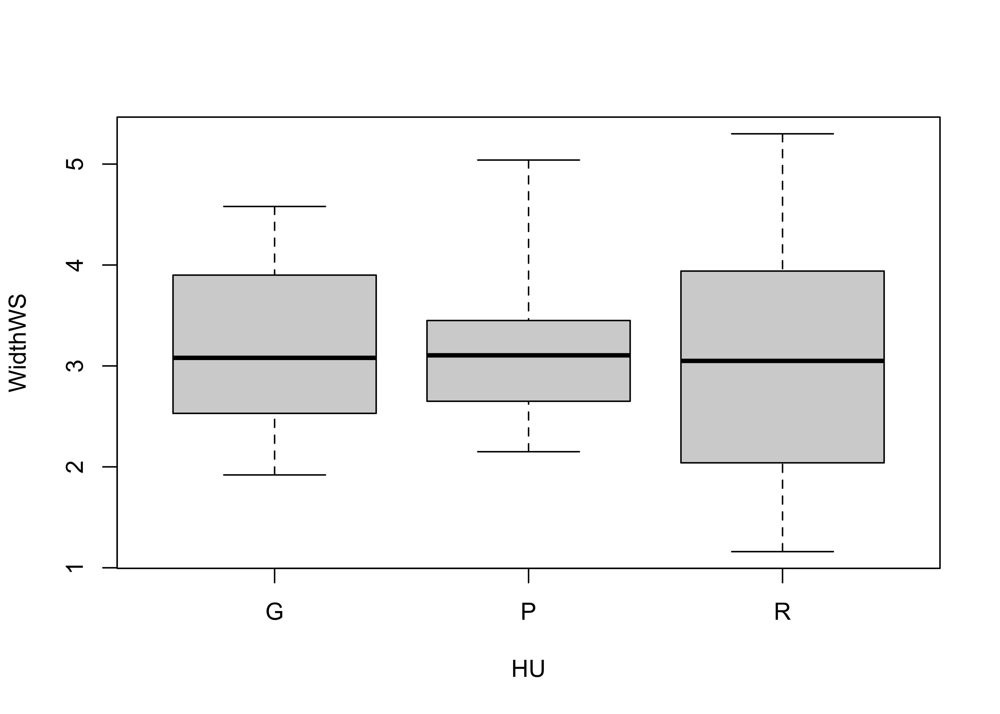
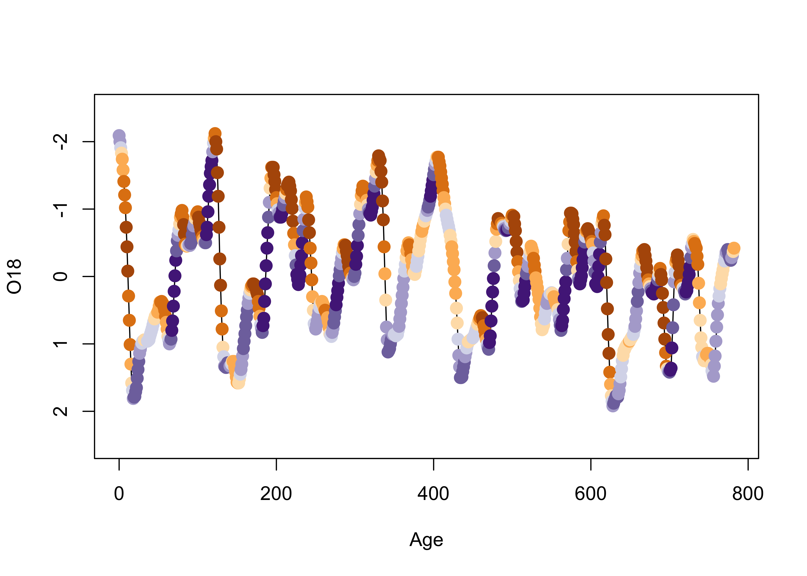
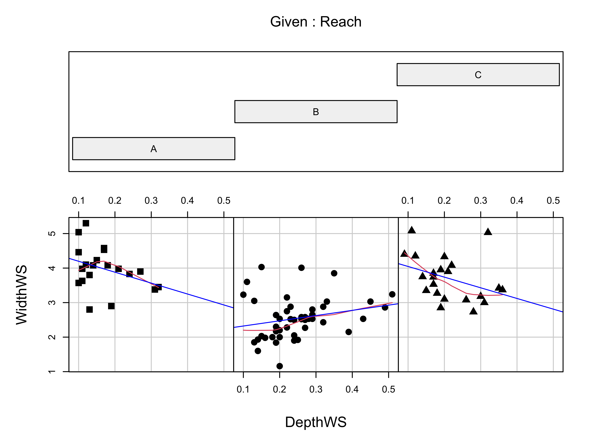

ggplot2 versions of simple plots
NOTE: This page has been revised for Winter 2021, but may undergo further edits.
1 Introduction
The R package ggplot2 by Hadley Wickham provides an alternative approach to the “base” graphics in R for constructing plots and maps, and is inspired by Lee Wilkinson’s The Grammar of Graphics book (Springer, 2nd Ed. 2005). The basic premise of the Grammar of Graphics book, and of the underlying design of the package, is that data graphics, like a language, are built upon some basic components that are assembled or layered on top of one another. In the case of English (e.g Garner, B., 2016, The Chicago Guide to Grammar, Usage and Punctuation, Univ. Chicago Press), there are eight “parts of speech” from which sentences are assembled:
- Nouns (e.g. computer, classroom, data, …), including gerunds (e.g. readings)
- Pronouns (e.g. he, she, they, …)
- Adjectives (e.g. good, green, my, year-to-year, …, including articles, e.g. a, the)
- Verbs (e.g. analyze, write, discuss, computing, …)
- Adverbs (e.g. “-ly” words, very, loudly, bigly, near, far, …)
- Prepositions (e.g. on, in, to, …)
- Conjunctives (e.g. and, but, …)
- Interjections (e.g. damn)
(but as Garner notes, those categories “aren’t fully settled…” p. 18).
In the case of graphics (e.g. Wickham, H., 2016, ggplot2 – Elegant Graphics for Data Analysis, 2nd. Ed., Springer, available online from [http://library.uoregon.edu]) the components are:
- Data (e.g. in a dataframe)
- Coordinate Systems (the coordinate system of a plot)
- Geoms and their “aesthetic mappings” (the geometric objects like points, lines, polygons that represent the data)
These functions return Layers (made up of geometric elements) that build up the plot. In addition, plots are composed of
- Stats (or “statistical transformations”, i.e. curves)
- Scales (that map data into the “aesthetic space”, i.e. axes and legends)
- Facets (e.g subsets of data in individual plots)
- Legends and
- Themes (that control things like background colors, fonts, etc.)
2 Univariate and bivariate plots
2.1 Simple plots
Load the ggplot2 package:
# ggplot2 versions of plots
library(ggplot2)Here is the R base graphics simple index plot:
# index plot
attach(sumcr)
plot(Length)The ggplot2 package contains a method, invoked by the qplot() function for creating quick (hence the name) versions of the base-graphics plots. The general recommendation these days is to not rely on qplot() that much, but to learn the full capability of ggplot2 at the beginning.
qplot(seq(1:length(Length)), Length)Here’s the stripchart, plain and stacked:
# stripchart
stripchart(Length)
stripchart(Length, method="stack")… and the qplot() versions:
qplot(Length, rep(1,length(Length)))The full ggplot2() almost reproduces the base-graphics version. Note the use of the aes() (aesthetic) function for describing the basic plot, which then has the dotplot added using the geom_dotplot() function. The theme_bw() term specifies the simple black-and-white theme. As in the case of a histogram, the binwidth parameter controls the granularity of the plot, and `coord_fixed() changes the aspect ratio of the plot. (The white space can be cropped when saving the image.)
ggplot(data=sumcr, aes(x = Length)) +
geom_dotplot(binwidth = 0.25, method = "histodot") +
coord_fixed(ratio = 4.0)2.2 Dotcharts/Dotplots
Here’s the base-graphics Cleveland-style dotchart.
# Dot charts
dotchart(WidthWS, labels=as.character(Location), cex=0.5)
… and the ggplot2 equivalent:
ggplot(sumcr, aes(x=WidthWS, y=Location)) + geom_point(size=1) ggplot(sumcr, aes(x=WidthWS, y=Location)) + geom_point(size=1) + theme_bw()Note the subtle difference produced by the use of the theme_bw() term. The plots are basically x-y plots (specified by the aes(x=WidthWS, y=Location) arguements), with the points themselves added by the geom_point() term.
Here’s the dotchart, with rows ordered by the WidthWS values:
index <- order(WidthWS)
dotchart(WidthWS[index], labels=as.character(Location[index]), cex=0.5)… and the ggplot2 equivalent–note the use of the theme() term to modify the label size:
ggplot(sumcr, aes(x=WidthWS, y=reorder(Location, WidthWS))) +
geom_point(size=1) +
theme(axis.text.y = element_text(size=4, face="italic"))2.3 Boxplots
Here is the standard boxplot:
# Boxplot
boxplot(WidthWS ~ HU, range=0)
… and the qplot() version:
qplot(HU, WidthWS, data=sumcr, geom="boxplot")ggplot(data = sumcr, aes(x=HU, y=WidthWS)) + geom_boxplot() + theme_bw()The actual data points can be added to the boxplot, by specifying an additional graphical element using the geom_point() term.
ggplot(sumcr, aes(x=HU, y=WidthWS)) +
geom_boxplot() +
geom_point(colour = "blue") Detach the sumcr dataframe.
detach(sumcr)2.4 Histograms and density plots
The base-graphics histogram, with breaks = 20 looks like this:
# histograms
attach(scanvote)
hist(Yes, breaks=20)Here’s the ggplot2 version, with the biwidth specified explicitly (e.g., 1.0)
ggplot(scanvote, aes(x=Yes)) + geom_histogram(binwidth = 1)Here’s another ggplot version, with more control over appearance, and with the edge of the first bin explicitly specified.
ggplot(scanvote, aes(x=Yes)) +
geom_histogram(binwidth=1, fill="white", color="red", boundary=25.5)Here’s a version with the individual data points added–note how it is built up from a basic plot by progressively adding graphical elements:
ggplot(scanvote, aes(x=Yes)) +
geom_histogram(binwidth=1, fill="white", color="red", boundary=25.5) +
geom_point(y=0) Here’s a base-graphics density plot:
# density plots
Yes.density <- density(Yes)
plot(Yes.density) … and a version the ggplot2 density plot:
ggplot(scanvote, aes(x=Yes)) + geom_density() + ylim(0.0, 0.05)The combined histogram, density and rug plot via the base graphics:
Yes.density <- density(Yes)
hist(Yes, breaks=20, probability=TRUE)
lines(Yes.density)
rug(Yes)And here’s a ggplot version, with three distinct layers:
ggplot(scanvote, aes(x=Yes)) +
geom_histogram(data=scanvote, aes(x=Yes, y=..density..), binwidth=1,
fill="white", color="red", boundary=25.5) +
geom_line(stat = "density") +
geom_rug(data=scanvote, aes(x=Yes)) geom_density(data=scanvote, aes(x=Yes, y=..density..)) +
detach(scanvote)3 Bivariate plots
3.1 Scatter diagrams
There are ggplot2 equivalents of the common “base-package” bivariate plots, that offer finer control of the appearance of the plots than can usually be acheived with the base plots.
Here’s the base plot version of a scatter diagram:
# scatter plots
# use Oregon climate-station data
attach(orstationc)## The following objects are masked _by_ .GlobalEnv:
##
## lat, lonplot(elev,tann)… and the `qplot version:
qplot(elev, tann, data=orstationc) + theme_gray()detach(orstationc)Here are the two scatter plots of yes votes vs population in the Scandinavian data set, using base graphic:
# use Scandinavian EU vote data [scanvote.csv]
attach(scanvote)
plot(Pop, Yes) # arithmetic axis
plot(log10(Pop), Yes) # logrithmic axisThe ggplot2 versions of those plots can be compares side-by-side by generating the plots and saving them as objects (plot and plot2), and then using a function grid.arrange() from the gridExtra package to plot the two objects:
library(gridExtra)
plot1 <- ggplot(scanvote, aes(x=Pop, y=Yes)) + geom_point()
plot2 <- ggplot(scanvote, aes(x=log10(Pop), y=Yes)) + geom_point()
grid.arrange(plot1, plot2, ncol=2)Note that ggplot2 allows one to transform the coordinate system as well as the values of the individual variables. Here a log10 scaling of the x-axis is done. Note that the overall appearance of the plots is identical–it’s the x-axes that differ.
plot1 <- ggplot(scanvote, aes(x=log10(Pop), y=Yes)) + geom_point()
plot2 <- ggplot(scanvote, aes(x=Pop, y=Yes)) + coord_trans(x="log10") + geom_point()
grid.arrange(plot1, plot2, ncol=2)The same kind of “point decoration” offered by the base package can be done using ggplot2:
plot1 <- ggplot(scanvote, aes(x=log10(Pop), y=Yes, color=Country)) + geom_point()
plot2 <- ggplot(scanvote, aes(x=log10(Pop), y=Yes, shape=Country)) + geom_point()
grid.arrange(plot1, plot2, ncol=2)Labeling of points using ggplot is possible, and again offers more fine control, such as some ability to deal with text overlap.
Here is the base plotting version of a text-labelled scatter plot:
plot(log10(Pop),Yes, type="n")
text(log10(Pop),Yes, labels=as.character(Country)) # textA ggplot version of the same ia shown below. The check_overlap() function attempts to move the labels to avoid overplotting. To see where the datapoints actualy lie, they are added as dots.
ggplot(scanvote, aes(x=log10(Pop), y=Yes, label=as.character(Country))) +
geom_text(check_overlap = TRUE, size = 3) +
geom_point(size = 0.5) +
theme_gray()ggplot(scanvote, aes(x=log10(Pop), y=Yes, label=as.character(Country))) +
geom_label(size = 3) +
geom_point(size = 1, color = "red") +
theme_gray()Note the difference between the plots–the first plots a simple text string using geom_text() while the second plots a more formal label using geom_label().
detach(scanvote)The grid extra package obviously makes it efficient to plot different variables side by side, which is often a better approach than plotting them on the same plot:
# use Oregon climate-station data [orstationc.csv]
attach(orstationc)## The following objects are masked _by_ .GlobalEnv:
##
## lat, lonleft <- ggplot(orstationc, aes(x=elev, y=tann)) + geom_point() + theme_gray()
right <- ggplot(orstationc, aes(x=elev, y=pann)) + geom_point() + theme_gray()
grid.arrange(left, right, ncol=2)detach(orstationc)Lastly, here’s a scatter plot smoothing example, beginning with the base-package version:
# use Oregon climate station annual temperature data
attach(ortann)
plot(elevation, tann)
lines(lowess(elevation,tann))
The ggplot2 version uses stat_smooth() to get the lowess curve (and confidence band):
ggplot(data = ortann, aes(x = elevation, y = tann)) +
geom_point() +
stat_smooth(span = 0.9) +
theme_bw()## `geom_smooth()` using method = 'loess' and formula 'y ~ x'detach(ortann)4 Multivariate plots
4.1 Labelled scatter plots
In addition to the simple catagorial (or factor) labelling of plots, the ggplot2 package supports more elaborate, or computed, decoration or coloring of plots to examine the role of additional variables on bivariate relationships.
Here’s the ggplot2 version of the specmap data. Recall that the relationship between ice volume and insolation anomalies (or differences from the present day, which are considered to be the pacemake of the ice ages) is weak when examined superficially.
attach(specmap)
plot(O18 ~ Insol, pch=16, cex=0.6)cor(O18, Insol)## [1] -0.2415094As we saw earlier, on approach is to look at the time series plot of O18 values, and use insolation to colorize the individual points.
library(RColorBrewer)
library(classInt) # class-interval recoding library
# first block -- setup
plotvals <- Insol
nclr <- 8
plotclr <- brewer.pal(nclr,"PuOr")
plotclr <- plotclr[nclr:1] # reorder colors
class <- classIntervals(plotvals, nclr, style="quantile")
colcode <- findColours(class, plotclr)
# second block -- plot
plot(O18 ~ Age, ylim=c(2.5,-2.5), type="l")
points(O18 ~ Age, pch=16, col=colcode, cex=1.5)
Here’s a ggplot2 version, where the colorization is extended to the lines as well as the symbols.
ggplot() +
geom_line(data = specmap, aes(x=Age, y=O18, color=Insol)) +
geom_point(data = specmap, aes(x=Age, y=O18, color=Insol), size = 3) +
scale_y_reverse() +
scale_colour_gradientn(colours=rev(brewer.pal(nclr,"PuOr")))As we saw earlier, postive insolation anomalies are associated with trends toward lower ice volume (negative O18 values, note the y-axis labelling), and negative anomalies with increasing ice volume.
detach(specmap)Symbol color and shape can be used to encode the values of two additional variables, as demonstrated using the Summit Cr. data:
attach(sumcr)
plot(WidthWS ~ CumLen, pch=as.integer(Reach), col=as.integer(HU))
legend(25, 2, c("Reach A", "Reach B", "Reach C"), pch=c(1,2,3), col=1)
legend(650, 2, c("Glide", "Pool", "Riffle"), pch=1, col=c(1,2,3))
Here is the ggplot2 version:
ggplot(sumcr, aes(x=CumLen, y=WidthWS, shape=Reach, color=HU)) + geom_point(size = 3)detach(sumcr)Symbol size can be used to indicate the value of a third variable, forming a “bubble” or “balloon” plot, to indicate the value of station elevation on a simple longitude by latitude plot of the Oregon climate-station data:
plot(orstationc$lon, orstationc$lat, type="n")
symbols(orstationc$lon, orstationc$lat, circles=orstationc$elev, inches=0.1, add=T)
Here’s the equivalent plot using ggplot2
ggplot(orstationc, aes(x=lon, y=lat, size=elev)) + geom_point(shape=21, color="black", fill="lightblue")4.2 Trellis/Lattice-like plots
Multipanel Trellis or Lattice plots can be constucted, using the “faceting” approach inggplot2. Here’s an example of a coplot:
library(lattice)
attach(sumcr)
coplot(WidthWS ~ DepthWS | Reach, pch=14+as.integer(Reach), cex=1.5,
number=3, columns=3, overlap=0,
panel=function(x,y,...) {
panel.smooth(x,y,span=.8,iter=5,...)
abline(lm(y ~ x), col="blue")
} )
Below is a ggplot2 version.
ggplot(sumcr, aes(x=DepthWS, y=WidthWS)) +
stat_smooth(method = "lm") +
geom_point() +
facet_wrap(~ Reach) ## `geom_smooth()` using formula 'y ~ x'detach(sumcr)Multiple-variable conditioning plots can also be created. Here are styles of plot using the Yellowsone N.P. precipitation-ratio data. The first plot examines the July vs January precipitation ratios, conditioned by elevation, and the second conditioned by latitude and longitude.
# create some conditioning variables
attach(yellpratio)## The following object is masked _by_ .GlobalEnv:
##
## Lon2Elevation <- equal.count(Elev,4,.25)
Latitude <- equal.count(Lat,2,.25)
Longitude <- equal.count(Lon,2,.25)
# January vs July Precipitation Ratios by Elevation
plot2 <- xyplot(APJan ~ APJul | Elevation,
layout = c(2, 2),
panel = function(x, y) {
panel.grid(v=2)
panel.xyplot(x, y)
panel.abline(lm(y~x))
},
xlab = "APJul",
ylab = "APJan")
print(plot2)# January vs July Precipitation Ratios by Latitude and Longitude
plot3 <- xyplot(APJan ~ APJul | Latitude*Longitude,
layout = c(2, 2),
panel = function(x, y) {
panel.grid(v=2)
panel.xyplot(x, y)
panel.loess(x, y, span = .8, degree = 1, family="gaussian")
panel.abline(lm(y~x))
},
xlab = "APJul",
ylab = "APJan")
print(plot3)
Here’s the ggplot2 version of the first of the two plots above. First, create an elevation-zone factor, simply sorting the elevations into four equal-frequency classes. Then, produce the plot
# create an elevation zones factor
yellpratio$Elev_zones <- cut(Elevation, 4, labels=c("Elev1 (lowest)", "Elev2", "Elev3", "Elev4 (highest)"))ggplot(yellpratio, aes(x=APJul, y=APJan)) +
stat_smooth(method = "lm") +
geom_point() +
facet_wrap( ~ Elev_zones)## `geom_smooth()` using formula 'y ~ x'Note that the panels are arranged in a different order. Elevation increases from lower left to upper right in the lattice plot, while it increases from upper left to lower right in the ggplot2 version.
Here is a two-conditioning variables plot. The arrangement of the panels is a little different from that produced by the lattice plot, and the slices are not overlapping.
# create conditioning variables
Loc_factor <- rep(0, length(yellpratio$Lat))
Loc_factor[(yellpratio$Lat >= median(yellpratio$Lat) & yellpratio$Lon < median(yellpratio$Lon))] <- 1
Loc_factor[(yellpratio$Lat >= median(yellpratio$Lat) & yellpratio$Lon >= median(yellpratio$Lon))] <- 2
Loc_factor[(yellpratio$Lat < median(yellpratio$Lat) & yellpratio$Lon < median(yellpratio$Lon))] <- 3
Loc_factor[(yellpratio$Lat < median(yellpratio$Lat) & yellpratio$Lon >= median(yellpratio$Lon))] <- 4
# convert to factor, and add level lables
yellpratio$Loc_factor <- as.factor(Loc_factor)
levels(yellpratio$Loc_factor) = c("Low Lon/High Lat", "High Lon/High Lat", "Low Lon/Low Lat", "High Lon/Low Lat")ggplot(yellpratio, aes(x=APJul, y=APJan)) +
stat_smooth(method = "loess", span = 0.9, col="red") +
stat_smooth(method = "lm") +
geom_point() +
facet_wrap(~Loc_factor)## `geom_smooth()` using formula 'y ~ x'
## `geom_smooth()` using formula 'y ~ x'5 Readings
- the main reference on
ggplot()is Wickham, H., 2016, Ggplot2, Elegant Graphics for Data Analysis, eBook available on line at UO Library (search topics for “ggplot2”) - Peng (EDA with R): Ch. 14, 15
- Kabakoff (Data Visualization with R): Ch. 3 - 6
- Irizarry (Introduction to Data Science): Ch. 6 - 10